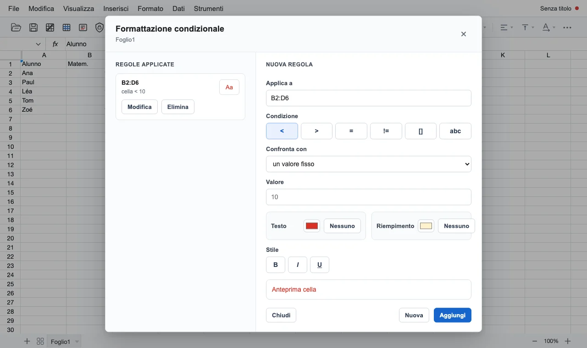

Formattazione condizionale
Una regola cambia l’aspetto delle celle di un intervallo che soddisfano una condizione. Segue i valori, immessi o calcolati.
Creare una regola
- Selezionare l’intervallo, senza la sua intestazione.
- o Formato › Formattazione condizionale.
- Scegliere la condizione, il valore di confronto, i colori o lo stile.
- Aggiungi.

| Condizione | La cella |
|---|---|
< | è minore di |
> | è maggiore di |
= | è uguale a |
!= | è diversa da |
[] | è compresa tra due valori, estremi inclusi |
abc | contiene un testo, maiuscole o minuscole |
Con che cosa confrontare
| Confronta con | Esempio |
|---|---|
| un valore fisso | i voti inferiori a 10 |
| una cella fissa | i voti inferiori alla soglia scritta in F1 |
| una colonna della stessa riga | nella colonna C, i valori superiori a quelli della colonna B, riga per riga |
Aspetto
Testo e Riempimento scelgono i colori, Nessuno li toglie; B, I, U mettono in grassetto, corsivo, sottolineato. Serve almeno un colore o uno stile.
Più regole
La colonna di sinistra elenca le regole del foglio: Modifica, Elimina. Se più regole si applicano a una cella, prevale l’ultima dell’elenco, colore per colore.
In un intervallo coperto da una regola, i colori di testo e di sfondo dati direttamente alle celle non si mostrano più.
Le regole sono salvate nel file Excel come formattazioni condizionali di Excel.